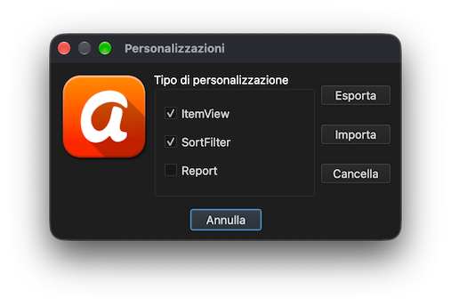

Personalizzazioni
Le personalizzazioni sono i layout salvati dagli utenti: colonne delle griglie, ordinamenti e filtri, configurazioni della stampa dei
report. Questa finestra le esporta su file, le importa e le cancella, per esempio per portarle da/su un altro database.

Impostazioni della finestra:
- Tipo di personalizzazione: selezionare quali tra ItemView (layout delle colonne di griglie e alberi), SortFilter
(ordinamenti e filtri) e Report (personalizzazioni della finestra di stampa) considerare nelle operazioni seguenti
- Esporta: salva in una cartella le personalizzazioni del tipo scelto; un file esistente viene sovrascritto solo
dopo conferma
- Importa: carica le personalizzazioni da un file. L'importazione avviene tutta insieme: se fallisce, non viene
caricato nulla
- Cancella: elimina, dopo conferma, tutte le personalizzazioni del tipo scelto presenti nel database corrente
Il formato dei file generati/letti ha estensione psa ed è un json contenente tutti i parametri delle personalizzazioni.
Inizio pagina